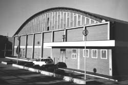
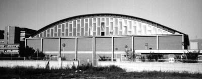

the Italian Gathering: 1997 | 1998

 |
|---|
A Demo party in Italy?Yes! The IG97 will be the first italian demo party ever, with compos, prizes, music, conferences and so on. After the IG96 and its success, we have decided to organize something bigger. Even though the main goal is to offer a meeting point for all the italian demoscene people, we have decided to extend the event and organize a party.There will be Amiga and PC compos : demos, intros, mod and GFX. To take part to the competitions, you can fill the subscription module. You must also bring your own works with you at the party! If you are in trouble and you cannot come to the party, you can send your work via internet (that is especially for foreign people) (see the instructions). We have also extended the party with some conferences about all the topics you will want to cover. Yes, the conferences are opened to everyone and if you want to speak, you can take the microphone and start speaking!!! Anyway we will cover some hot-topics and the rest is up to you! We will give you some terminal connected to the internet for free internet-jamming-session! There will also be some live-concerts carried on by the PCUS and Modra Stjerne. We have decided to push to the limit our organizing possibilities hoping to receive a big feedback from you. |
Party events |
Saturday, 6 September 1997Time: 10.00 The party starts Time: 14:00 Dead-Line for compos Time: 17:00 Conferences (Link for information) Time: 20:00 P.C.U.S. live Time: 21:00 Artworks showing and prize giving Time: 24:00 Modra Stjerne + Dj Horobi/Fra in concert Time 6:00 The party ends... |
How to reach IG97The party will be held in the sporting center in Via Rigopiano (near central hospital) in Pescara.Here are some photos : |
|
  |
|
For the ones who will come by train, the sporting center is near the central stations (less than 1Km)! The shortest path from the station, is the one who passes from Via Aremogna, via Passolanciano and the via Rigopiano. |
|
[Home Page- Compos- Subscription- Conference- Staff- Gallery/Links] |
|
NoCopyright 1997 web design: cerin0@hotmail.com Si ringrazia: Arci Nuova Associazione Pescara Metro Olografix Association Comune di Pescara |